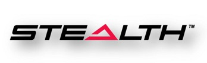
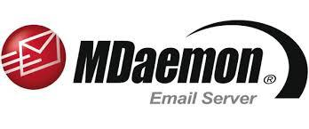
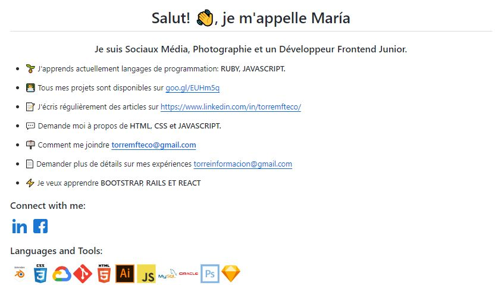

Social Media Senior | Community Manager | Photographie | Web Developer Junior
Cliquez ici et voyez mon portfolio de Photographie

Avec une vie professionnelle précoce, j'ai entrepris un voyage vers la vie professionnelle.
J'ai plus de 15 ans d'expérience dans divers domaines. Ma spécialité est dans le domaine de la communication, où j'ai 8 ans d'expérience en tant que médias sociaux.
Je suis caractérisé par le désir de me surpasser, je suis fiable et très motivé.
INDICE:
ANTÉCÉDENTS PROFESSIONNELS
PROFESSIONNELS
AUTRES SECTEURS
Terrassa Vallés. Télévision municipale de Terrassa. 06/2013 - 09/2013. Barcelona, Espagne.
Montage et post-production de vidéos. Mon travail consistait à monter les vidéos qui seraient diffusées à midi et les spots publicitaires destinés aux commerces de la région. Je suis entré pour couvrir les vacances d'été, pour une bourse ; qui m'a été accordé par l'intermédiaire d'une entreprise privée : EDITRAIN Expérience comme: GAFFER, ELECTRICISTAS, GRIP y MAQUINISTAS.Software utilisés: Adobe Premiere, Sony Vegass et Final Cut

Microlab-Laboratoire de photographie.
12/2014 - 06/2015. Santa Fe, Argentine. Manipulation du photographe et de l'imprimeur. Mon travail consistait à prendre des photos d'événements et de livres, à imprimer des photos, à créer des reconstitutions d'images anciennes et à assurer le service client. Imprimante utilisée: NORITSU OSS-3011 DIGITAL. Je suis en charge du nettoyage des composants de l'imprimante, comme ceux du Rack's. En plus de placer les liquides, d'imprimer.Software utilisés: Adobe Lightroom et Photoshop

Apex América- NextGen Customer Experience. Córdoba, Capital, Argentine. Community manager, Social Media. Dossier: 16221. Entreprise: Claro et Personnel Argentine 08/2015 - 18/11/2022. Réseaux sociaux: Attention via les réseaux sociaux: Mail, Facebook, Twitter, Linkedin, Youtube.
Software Customer Relationship Management utilisés:
ySocial yoizen
Salesforce Consola FAN NPLAY

S1 Gateway

Stealth Entel CyberSecure
Webmail MDaemon Technologies
Glacier Jijonenca. Serveuse, caissière. L'été. Gava, Barcelone, Espagne.
Assurances Santalucia. Conseillère en ventes Gava, Barcelone, Espagne.
iFix Móvil. Boutique et réparation de téléphone Ouverture de la boutique et vendeuse Castelldefels, Barcelone, Espagne.
El Txoko Restaurant. Maitre. Recevoir des réservations, assistant Castelldefels, Barcelone, Espagne.
Zitarrosa. Boulangerie et atelier Barista, professionnel du café. Castelldefels, Barcelone, Espagne.
Azurea. Décolletage de aux presitions, Suisse.
COMPETENCES GENERALES
- Personne créative, dès le début de ma carrière je me suis consacré à la photographie de mode, aux beaux-arts. J'ai réalisé des projets avec des marques modèles. Mes projets sont publiés sur le site suivant :
- J'aime travailler en équipe, pendant un certain temps j'ai aidé à la programmation de nouvelles méthodes de reversement pour le programme POGO. Où grâce à un système de visages (bons, plus ou moins, mauvais), un feedback s'effectuait entre l'employé et le chef d'équipe.
- Dédié au processus d'enseignement, effectuer le mentorat des nouveaux employés pendant un certain temps
COMPETENCES TECHNIQUES
La Cyber-sécurité
ÉDUCATION
Cybersécurité. Apex América et Académie Coder House, Cordoba, Argentina. 2018-2023
Formation achevée Community Management. Académie FICDE, Cordoba, Argentine. 2018-2019
Diplôme d'études supérieures Cinéma et télévision. École internationale de design et de communication audiovisuelle La Metro, Córdoba Argentine. 2014-2017
Post-produccion Cinéma et télévision. Entreprise privée, spécialiste de la formation,Barcelone, Espagne. Été 2013
Diplôme supérieur Photographie, portraits et mode École internationale GrisArt, Barcelone, Espagne. 2012-2014
Baccalauréat technologique. Institut XXV Olympiades, Barcelone, Espagne. 2009-2011
Formation achevée E.S.O enseignement obligatoire. Institut Les Marines, Castelldefels, Barcelone, Espagne. 2004-2008